This Help section contains Documentation , Features and Usage details of this software.
The Software starts with this login screen :

There are two Usernames that a user can enter :
- ncc_editor
- ncc_viewer
- For "ncc_editor" username, user must enter the password to start the program. The user "ncc_editor" has all the permissions of the software which allows him to use all the features that it can provide. The user is allowed to modify the data of Candidates in the main database of the software.
- "ncc_viewer" username has no password and anyone can access the software with this username. The user "ncc_viewer" has the permissions only to view the Candidate details and generate the excel sheets when needed but has no permission to edit the Candidate details in the Software's Database and has no permission to Backup or Restore the database.
After the LOGIN button is pressed , the software starts either in view mode or editing mode corresponding to the Username
There are totally 7 tabs in the software, each of which has its own purpose.
The Tabs are :
Detailed Description of all the TABS has been provided below :
Enrolment Form

The Enrolment Tab is used to Enrol new candidates into the Database. It's used to fill all the details of each candidate.
As seen in the above image, the Enrolment form Tab consists of several options. Each of the data that is entered in the fields will be saved in the database once submitted.
Elements of Enrolment form :
- Select signature
- Select Picture
- Search field
- ENROLL Button
- Various fields and corresponding Entry Boxes
- Update Entry checkbox
- Junior checkbox
- Submit button
Select signature :
This is a button which when clicked opens a file browser dialog where in the user can select the picture of the candidate's signature, while enrolling.
The file dialog menu looks like this.

Select Picture :
This is a button which when clicked opens a file browser dialog where in the user can select the picture of the candidate, while enrolling.
The file dialog menu looks like this.

Search field :

This field is used to search and get all the details of a candidate from his/her enrolment number or aadhaar number which can be chosen by the given radio buttons below the search field.
If there is No result from the search , then the message "No Details found" is shown at the top center of the window.
When the search is successful, the search results are displayed in the respective entry fields. However, the Enrolment form switches to VIEW MODE where the user can't accidentally change the data but can only view it.
ENROLL Button :
Whenever the user searches from the search field and if the search becomes successful , then the form goes into View Mode and doesn't allow any modification of the data displayed in the fields. During the View Mode, the ENROLL button would be in released state (not pressed)

Image of ENROLL button in released state
To put the Enrolment form back in EDIT MODE, click on the ENROLL button after which the ENROLL button goes into Pressed state and the form would switch to the Edit Mode

Image of ENROLL button in pressed state
Various fields and corresponding Entry Boxes :
The Enrolment form has various fields like Enrolment Number , Name , Date of Birth, Unit,Meal Preference etc
The Fields with the red star * are compulsory fields and must be filled before submitting the form.
Different fields have different types of input boxes namely
- Line Entry : User can enter a line of text
- Multi-Line Entry : User can any number of lines
- Date Entry : User can specify any date. Mouse scroll will also work for changing the date when mouse pointer is over the date entry.
- Single selection Entry : User can only select one item from several items
- Radio buttons : User can only select only one Button.
- Multi-selection box : User can select many items from a list of items.
- Check box : User can either Check or Uncheck which is analogous to True or False


Entry Constraints :
- Enrolment Number, Aadhaar Number, Candidate Name, Address and Unit fields are compulsory
- Aadhaar Number field can only take Numbers and needs to be 12 digits
- Mobile Number field can only take Numbers and needs to be 10 digits
- Account Number field can only take Numbers
- IFSC code should be 11 characters
- MICR code can only take Numbers and should be 9 digits
- Enrolment Number should be unique and shouldn't have another duplicate.If the present details need to be updated, check the "Update Entry" check box before clicking submit button.
- Aadhaar Number should be unique and shouldn't contain any duplicate i.e
Update Entry :
This check Box is used to update the details of a candidate who is already enrolled. To update the details of the candidate, Check the "Update Entry" before clicking the Submit button.
Junior :
This check Box is used to specify if the candidate who is being enrolled is a junior or senior. Senior is specified by not checking the junior button and junior is by checking it.
Submit Button :

Submit Button is clicked when all the required fields are filled. After successful submission the Candidate details will be added to the database and the Candidate photo and signature is added into the Candidate Photos folder including the generated PDF. If the user submits an already present Enrolment Number, error message is shown to check the Update Entry checkbox.
Back to top
QUERY

Query Tab is used to search and get the details of candidates who have already been enrolled before. The searching can be done in various ways and the results can be filtered as per your choice.
Elements of QUERY tab :
- Checkboxes of all fields
- Field Selection box
- Condition linkers (Or , And )
- Back
- Insert
- Clear
- Query
- Query Result
- Save Results
Checkboxes of All fields :
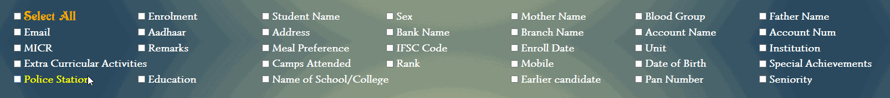
These checkboxes are used to specify which fields must be shown when the Query is successful. In the Query result only these fields which are checked are shown omitting the rest of the fields. If "Select All" is checked , then all fields are shown in the Query result.
Field Selection Box :
This Selection box is used to search based on a condition of your choice. After selecting the field from the box and Entering the condition data , User clicks on the Insert Button and the condition gets inserted and is shown in the provided blue-pink box.
Condition Linkers :

These Buttons are used to link multiple conditions together logically.
Example :- If the user wants to get details of all "Male" candidates of "Cadets" rank, it can be done as shown below:
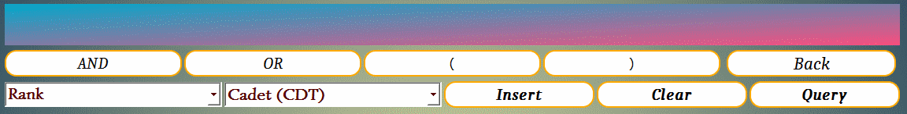
Insert , Back , Query , Clear :
- Insert : is used to insert any condition specified from the Selected field into the label which shows all applied conditions
- Back : is used to remove the last applied condition, which is used in case if multiple conditions are applied and the last one needs to be removed.
- Clear : is used to clear all the conditions or constraints applied previously and clears all conditions.
- Query : is used to search and get the details of all the candidates based on the conditions that you have set.
Query Results :

Query Results look as shown in the above image. The fields that appear here can be chosen from the Field Checkboxes mentioned before.
Working steps of Query :
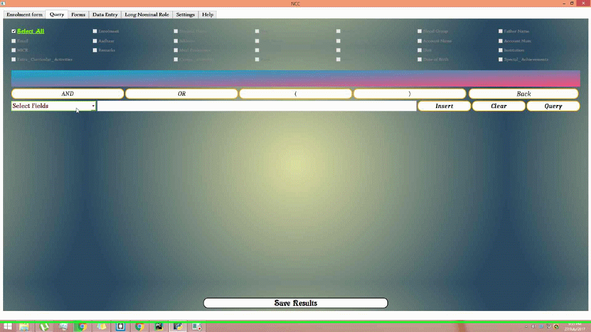
Save Results :

After a successful query , the user can choose to export the results to an EXCEL or CSV file. Clicking the "Save Results" button gives rise to a file dialog menu as shown below and lets the user choose the location for the file to be saved as shown below in the image.

When different Institutions need to send the enrolled candidates details to the NCC office or any other institution, it can be done by checking the Select All check box and exporting an Excel file using the Save Results button. The details of candidates from the excel file can then be added to the database using "Append Excel from Database" option in the "Settings" Tab.
Back to top
FORMS

This tab is used to generate different forms. The generated forms will have the details of the candidates whose Enrolment Numbers have been specified in the Enrolment entry box before generating the form.
Elements of FORMS TAB :
- Forms Selection
- Enrolment Entry Box
- Generate Form
- Update Form
Forms Selection :
Here, the user can select the form out of a list of several pre-defined forms. Each forms has its own set of fields. When the User generates an excel sheet of a Form , corresponding fields would be present in the generated excel sheet along with all the details of the candidate if it was previously present in the database.
The Default forms are :
- Cadet details
- Yoga Day
- Enrolment Nominal roll
- Camp Nominal roll
- Scholarship Nominal roll
- A certificate
- B certificate
- C certificate
- Specimen signature of cadets
- TADA to cadets camps
- TADA to cadets for exam
- User can add new forms in the "Forms and Fields management" option in the Settings TAB. Each of these forms consists of many fields. The fields can be standard fields or non-standard fields.
- The Standard fields or (known fields) are the fields which are in the Enrolment form and has the details of the candidate. Whenever the form gets exported, all those details will be put automatically in the generated excel or CSV sheet.
- The non-standard fields or (Unknown fields) are the fields which are not present in the Enrolment form they are put as empty columns with just the field heading in the generated excel sheet which can be filled externally later.
Enrolment EntryBox :
To generate the required forms, the user should specify the Enrolment Numbers of the candidates whose details should be included within the generated form. These Enrolment Numbers are specified in the given Entry Box separated by comma ( , ) as shown below.
enrolnumber1 , enrolnumber2 , enrolnumber3 and so on.
There can be any number of spaces between the Enrolment Numbers but they must be seperated by commas
Generate form :

After Entering the Enrolment Numbers in the Entry Box , clicking the Generate Form button would open the File menu dialog in which user can specify the name and location for the excel or CSV file to be saved.
Update form :

If the details of more candidates need to be added or appended to a previously generated form of same type, then "Update Form" option can be used to do so. Clicking the update form after entering the Enrolment Numbers in the Entry Box again opens up a File dialog menu in which user can locate the previously generated excel or CSV file. After it s specified the details of the specified candidates are added to the specified excel or CSV spreadsheet.

Back to top
DATA ENTRY

This tab is used to Update the details of all the candidates of a particular Institution. It enables for mass updating of candidate details compared to updating each candidate's details in the Enrolment form.
Elements of Data Entry :
- Institution Selection box
- Different types of Forms
- Entry Table
- Generate Excel
- Save to Database
Institution Selection Box :
This Selection Box is used to select an institution out of a list of institutions. So, the Candidate details of the selected institution will be displayed for Data Entry.

Different types of Forms :
There are different categories in Data Entry each containing their own pre-defined fields. The different categories in which data entry can be done are namely :
- A Certificate
- B Certificate
- C Certificate
- Camps Attended
- Extra Curricular Activities
- Remarks
- Attendance
A Certificate , B Certificate , C Certificate :
When the User Clicks on either of these certificates, the Data Entry table opens, containing the fields corresponding to the selected certificate. The user can enter the data for the candidates of the particular institution or Unit in the table provided. Checking the "Eligible" checkbox would only show those candidates whose attendance percentage is greater than 75% for both years.
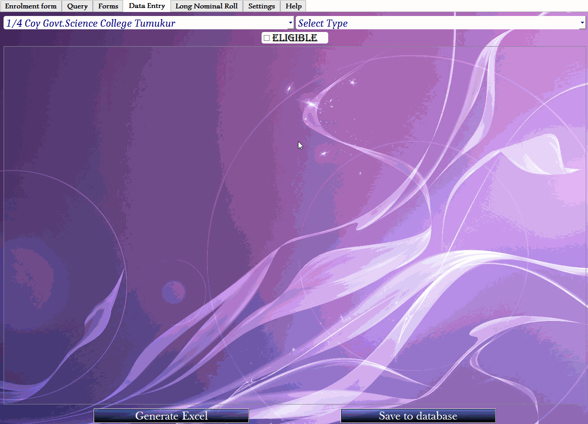
Camps Attended :
This option is used to specify the candidates who have attended the selected camps. This is done by writing comma ( , ) separated Enrolment Numbers in the Enrolment Entry box. It also provides fields for entering the location of the Camp and the camp's Start Date and End Date. This is pretty useful in changing the location or Date of a camp directly by specifying the Enrolment Numbers of candidates who have taken part in it, without having to change each date manually in the table for every candidate. The working of this feature is better shown in the below slide.
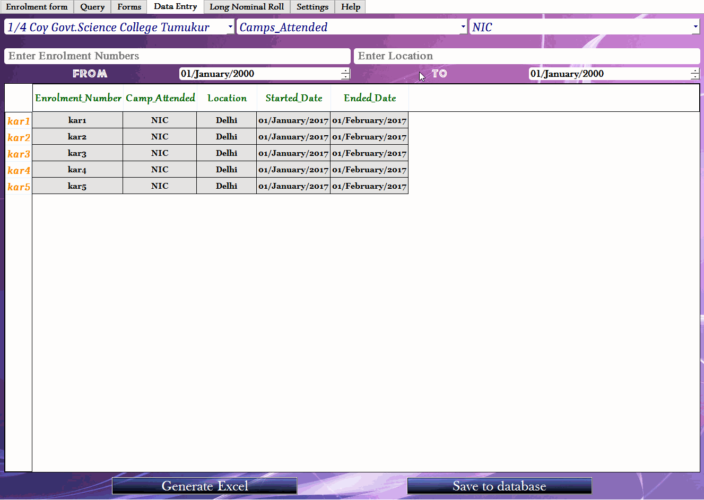
Extra Curricular Activities and Remarks :
The Extra Curricular Activities and Remarks options are given for the purpose of mass editing for many candidates at once. The table shows the Extra curricular activity and remark data if they were entered during the Candidate's enrolment. The details entered or edited in the Data Entry table gets stored in the Enrolment Table of our Database and would replace the already present remarks and Extra curricular activities data from the enrolment table.


Attendance :
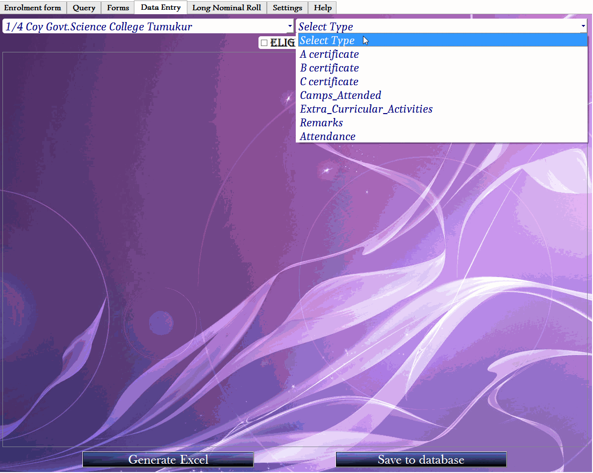
As shown above , choosing 'Attendance' from the selection box opens up the attendance table. Here the user can enter the total days and the number of attended days for each candidate and it will automatically calculate percentage of attendance and decide if the candidate is eligible or not for the corresponding exam. Option is given to choose the year for the attendance entry. Based on the attendance percentage of both years , while entering the Data after choosing A Certificate , B Certificate or C Certificate , clicking the eligibility checkbox would only show the candidates who have eligibility based on their attendance percentage.
Entry Table :

The Entry table allows the user to edit the candidate details for many candidates at once, unlike in Enrolment form where in the user can only update the details of an enrolled candidate one at a time. Based on the institution selected and the type of certificate , Camps attended , Attendance or Remarks selected, the corresponding columns will be displayed to the user along with the perviously present data entries obtained from the Enrolment table of our database. Out of these :
- The Camps attended table is read-only and can't be edited within the table. The editing can be done using the input elements given above the table.
- A_Certificate, B_Certificate and C_Certificate table can be completely edited from within the table.
- Remarks and Extra_Curricular_Activities has one editable column
- In the Attendance table, only the Total days and Days attended can be edited. The attendance percentage and eligibility is automatically calculated and displayed in respective columns.
Generate Excel :

This feature is used to export the table contents to an excel or CSV spreadsheet. Clicking the 'Generate Excel' button would open a file dialog menu in which the user can specify the location and name for the file to be saved.
The file dialog menu looks as shown in the image below :
Save to Database :

If the user wants to save the entered data in the Data Entry table permanently in the corresponding table of the Software's database, it can be done by clicking the above button after entering the details in the table and making sure everything is right.
Working Steps of Data Entry :
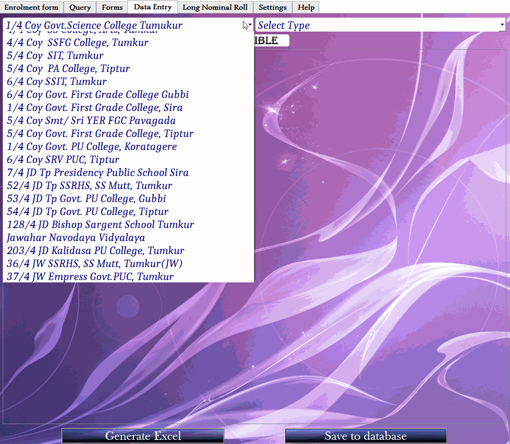
Back to top
Long Nominal Roll

Long Nominal Roll tab is used to generate and export the entire details of the candidates belonging to a particular institution or Unit including the candidate's photo and his signature if present. In this tab the details of the candidates can only be viewed and details can be exported. But it can't be edited. To edit the details, use the Data Entry Tab.
Elements of Long Nominal Roll :
- Selection box
- Show button
- Long Nominal Roll table
- Generate Form
- Update Form
Selection Box :

Its used to get the candidate details based on either institution or Unit or get all candidate details
Show button :

Clicking this button opens up the Long Nominal Roll table which consists of all the candidate details along with candidate's photo and his signature if it was saved during enrolment.
Long Nominal Roll table :

The Long Nominal Roll table opens up after the user clicks on the show button and has details of all candidates of the selected unit or institution. Here the data cannot only be viewed but can't be edited. For editing , user can make use of the Data Entry Tab.
Generate Form :

If the user wants all the details in the Long Nominal Roll table to be exported to an excel or CSV spreadsheet file , he can do so using the Generate Form option which open up a file dialog menu in which the location and of the name of the file can be specified.
Update Form :

If the details of more candidates need to be added or appended to a previously generated form of same type, then "Update Form" option can be used to do so. Clicking the update form opens up a File dialog menu in which user can locate the previously generated excel or CSV file. After its specified the details of all candidates visible in the Long Nominal Roll table are added to the specified excel or CSV spreadsheet.
Working Steps of Long Nominal Roll tab :
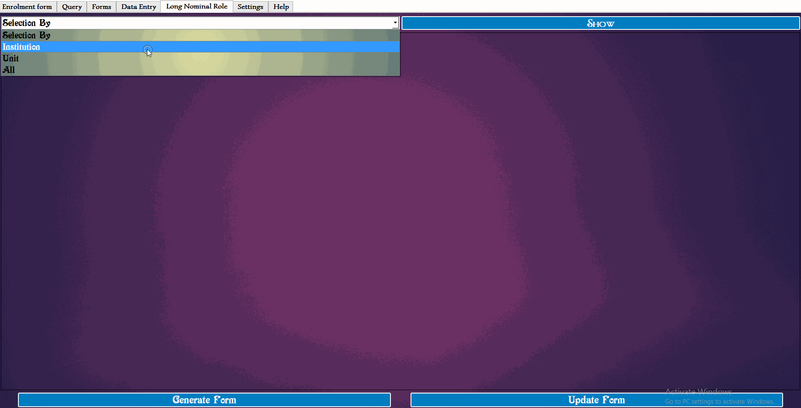Back to top
SETTINGS

The Settings Tab is used to control various parts of the software and is used to add forms and fields , Camps and Institutions which would show up in all parts of the software once a new camp or institution is added here. User can also Backup and restore the Database. If an institution sends the details of its candidates in an excel form which is generated in the Query Tab, the details of those candidates can also be added to the main database.
Elements of Settings Tab :
- Login
- Institutions List
- Forms and Fields Management
- Camps List
- Open Candidates picture folder
- Backup All Data
- Restore BackedUp Data
- Append To DataBase from Excel
LOGIN :

Clicking the LOGIN button opens up the Login window just like the initial login window. This is useful if a user want to switch between View mode and Editing mode without restarting the software. If the user logs with the ncc_editor username , if the software is in Editor-mode , then it gets switched into View-mode. If the user logs in with the same username as before, no change would occur after login.
Institutions List :
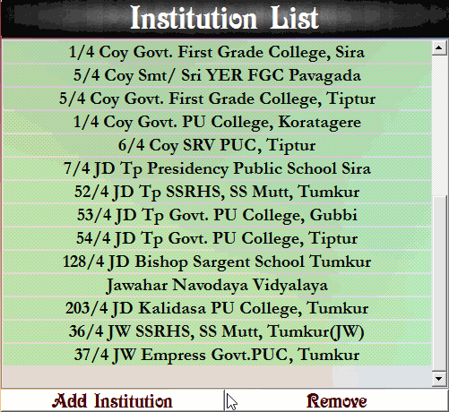This is a complete list of all the institutions that are registered for NCC and will be displayed in other parts of the program. User can Add new institutions to this list of Remove the present ones from it.
Forms and Fields Management :
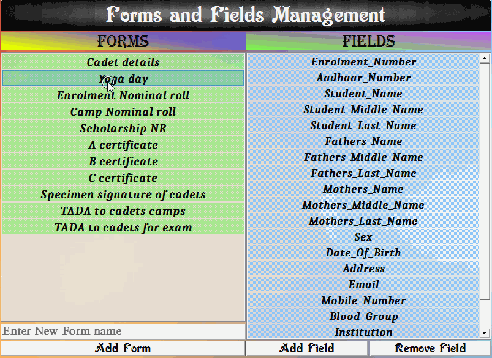
It is list containing various types of forms used in NCC and each of these forms has its own fields. New fields can be added to these forms (except for Certificates). And the present fields can be removed. When the form gets exported as an excel , all these fields will be present in the exported spreadsheet.
There two types of fields namely :
- Standard fields
- Non-standard fields
Standard fields : (Known fields) are the fields which are in the main enrolment form. Whenever any of the form is exported with the candidate details , the standard fields would be automatically filled with the details of the candidate in the exported spreadsheet.
Non-Standard fields : (Unknown fields) are the fields which are not in the enrolment form and can have any name as the user wants which can be added in Settings. When the form gets exported with the candidate details, these fields would be present in the exported spreadsheet as empty columns which can be filled later externally using Spreadsheet supported softwares like MS Excel.
Note:- The fields in A_Certificate , B_Certificate and C_Certificate forms are fixed and hence new fields can't be added to these and present fields can't be removed.
Camps List :
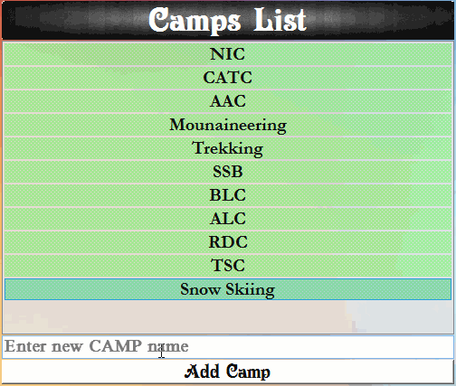This is a list containing all the Camps that come under NCC. The Camps in this list appear in all other parts of this software. If the user wants to add new camps to the list , it can be done by entering the camp name in the provided entry box and then click the add camp button. The custom added camps can be removed later.
Open Candidates Picture folder :

When a candidate is enrolled in the Enrolment form , the candidate's photo and signature photo will be saved in a folder named "candidate photos" along with the full PDF document of the Enrolment form for each candidate. If the above button is clicked , then the 'candidate photos" folder would open from which user can get the PDF form and other related files of each candidate.
The files in the candidate photos folder have specific predefined names :
- Candidate's portrait picture : will have the candidate's Enrolment Number.
- Candidate's signature picture : will have the candidate's Enrolment Number followed by "_sign". Example :- If enrolment number is 'kar1' his signature photo will have the name 'kar1_sign' in the candidate photos folder.
- Candidate's Enrolment form PDF : will have the candidate's Enrolment Number followed by "_pdf". Example :- If enrolment number is 'kar1' his signature photo will have the name 'kar1_pdf' in the candidate photos folder with the extension .pdf.
Backup All Data :

If the user wants to Uninstall the software , he might want to backup all the data concerning the candidates who have already enrolled and might want to backup the Database file in times of need. When the Backup button is clicked, it opens up a file dialog menu to allow the user to specify the location for the data which needs to be backed up.

Restore Backed up Data :

This option is used to Restore the files which have been backed up previously using the "Backup All Data" option or (manual backup of files). Clicking the above button would give rise to a window asking the user to choose the type of file that the user wants to restore.
The choice window is as shown below :

Based on the option chosen by the user , a file dialog menu would open asking the user to navigate to the backed file or 'candidate photos' folder after which the restore process would start.
If the user chooses 'candidate photos' option , since this folder contains pictures and PDF form of each candidate , its size would be quite big and hence would require the user to wait for some time till all files in the specified folder is copied to the software's candidate photos folder.

Append to Database From Excel :

This option is used to add the candidate details present in an excel or CSV spreadsheet to the software's main database. The excel file must be generated in the Query Tab after checking the Select All checkbox and then saving the Query results to an Excel file. This option is useful when the candidate details from an institution need to be added to the software's main database.
When the above button is clicked, a window as shown below would open asking the user to choose the database table to which the data should be appended corresponding to the generated excel spreadsheet.

About our database :- The software's database consists of the following tables in the database :
1. Enrolment : Candidate details entered in the enrolment form is stored here.
2. A Certificate: This table holds the data which is entered in the Data Entry tab after choosing A_Certificate from the selection box.
3. B Certificate: This table holds the data which is entered in the Data Entry tab after choosing B_Certificate from the selection box.
4. C Certificate: This table holds the data which is entered in the Data Entry tab after choosing C_Certificate from the selection box.
5. Attendance: This table holds the data about the attendance details which is entered in the Data Entry tab with the Attendance chosen from the selection box.
6. Camps Attended : This table holds the details of camps , their location and their start and end dates which can be edited and saved in the database from the Data Entry tab.
Each of these tables contain a fixed number of columns. When the user chooses the table from the window shown in the above image , it is must that only corresponding Excel sheet has to be selected for the excel data to get added to the database.
Example:-
- If the user has to add all candidate details to the main enrolment table of software's database, the excel sheet which is to be selected, must be generated in the Query tab with the Select All option checked.
- If the user has to add the data to A_certificate table from A_certificate Excel sheet, the excel sheet must be generated using the Data Entry table after selecting the A_certificate in selection box. This process is same for all the Certificates.
Note :-
Once the user chooses the table corresponding to the excel spreadsheet , the data in the excel spreadsheet gets added to the database if the database already doesn't have the same enrolment numbers as in the selected spreadsheet. If the enrolment numbers in the excel sheet are already present in the database ,those enrolment numbers are not added to the database and hence ignored. In such a case, a conflicts window is shown listing all the Enrolment Numbers which are already in the database. The conflicts window looks as shown below.
End of Help
Back to top
About The Developers :
Gangadhara Shetty P J and Natesh M Bhat are the developers of this software, who at the time of development of the software were pursuing Engineering at Siddaganga Institute of Technology, Tumkur in the branch of Computer Science and Engineering.